1 Stochastic Analysis – Introductory Example
The following example introduces one method of performing stochastic analysis in GX, in particular the concept of random field modelling of the spatial variability of material parameters. The problem considered is a strip footing of width B resting on a Tresca material with a specified random variation of the undrained shear strength s_u (see Figure 1.1). The load acting on the footing is q = 249 kN/m², leading to a deterministic factor of safety of \text{FS} = 1.70 for s_u = 80 kPa.
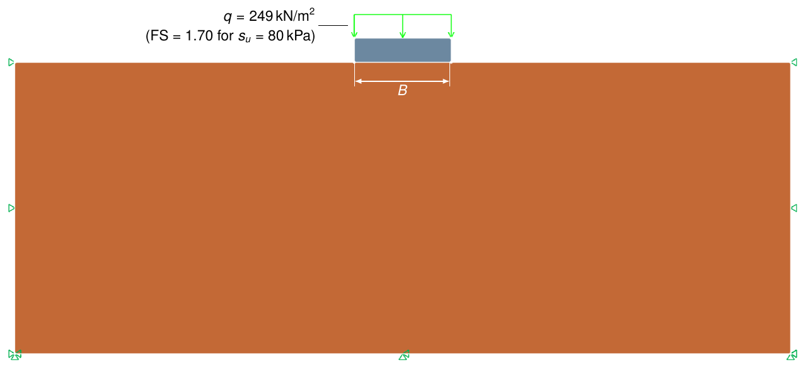
Figure 1.1: Strip footing on clay with spatially variable undrained shear strength.
1.1 Variability of material parameters
Natural soils display a considerable amount of variability, the origins of which can be traced to a variety of processes at a range of length scales. This variability can be taken into account in a number of ways. The simplest is to assume that a given parameter of interest, the undrained shear strength for example, follows a probability distribution given by a mean value and standard deviation. The variability of such parameters is often modeled using the lognormal distribution:
f(x;\sigma,\mu) = \frac{1}{x\sigma\sqrt{2\pi}}\exp\left(-\frac{(\ln x - \mu)^2}{2\sigma^2}\right), \; x > 0 \tag{1.1}where f is the probability distribution function for the parameter x and \mu and \sigma are model parameters which are related to the mean and standard deviation by
\text{Mean} = \exp\left(\mu+\frac{\sigma^2}{2}\right) \tag{1.2}\text{Std} = \text{Mean} \times \text{COV}/100\% = \exp\left(2\mu +\sigma^2\right)\left(\exp\left(\sigma^2\right)-1\right) \tag{1.3}with \text{COV} = \text{Std}/\text{Mean}\times 100\% being the coefficient of variation. The cumulative distribution function is given by
F(x;\sigma,\mu) = \tfrac{1}{2}\,\mathrm{erfc}\left(-\frac{\ln x - \mu}{\sigma\sqrt{2}}\right) \tag{1.4}where erfc is the complementary error function.
An example of a lognormally distributed undrained shear strength with a mean value of \mu = 80 kPa and a coefficient of variation of 30% is shown in Figure 1.2.
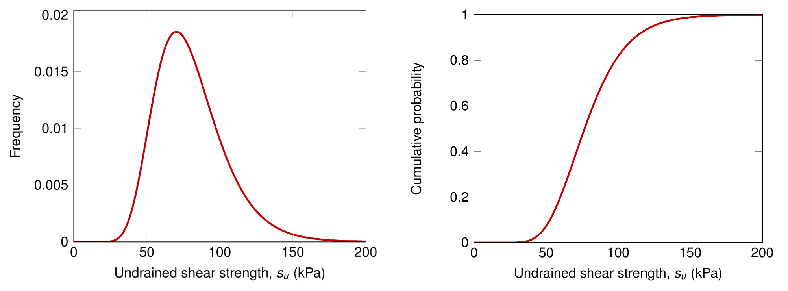
Figure 1.2: Lognormal distribution of undrained shear strength (\mu = 80 kPa, COV = 30%).
Next, to account for this kind of variability when determining the factor of safety for the problem shown in Figure 1.1, a series of Monte Carlo simulations with s_u chosen according to the given probability distribution could be performed. Since the factor of safety is proportional to s_u, the probability distribution of the factor of safety follows the same distribution as s_u, i.e. a lognormal distribution with parameters \mu = 1.70 and \sigma = \mu \times \text{COV}/100\% = 0.51. This is shown in Figure 1.3 where a total of 1,000 Monte Carlo simulations have been performed. The finite element calculations are carried out using 1,000 mixed finite elements with 3 adaptivity iterations.
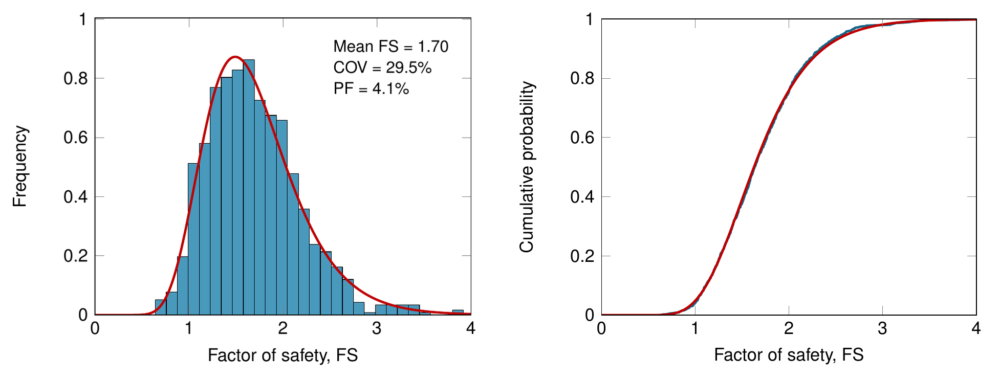
Figure 1.3: Probability distributions of factor of safety. The red curves are lognormal distributions with \mu = 1.70 and \sigma = 0.51 corresponding to the assumed variability of s_u.
1.2 Random fields
While the approach outlined above to some extent accounts for the variability of soil strength, it is not realistic to assume a constant value of the undrained shear strength throughout the domain, albeit that it varies from run to run.
The random fields concept provides a means of generating more realistic spatial distributions of the material parameters. A probability distribution is still assumed to account for the inherent variability following the previous section. In addition, spatial correlation lengths are introduced with the idea that a material parameter value measured at one point will have some correlation to a value measured at an adjacent point — depending on the distance in space between the two points. Hence the correlation length describes the distance over which the measured values will tend to be significantly correlated. A large correlation length will thus imply a smoothly varying field while a smaller value will imply a more ragged field. At the extreme ends of the spectrum, an infinite correlation length corresponds to the situation considered in the previous section (the value at a given point will be perfectly correlated, i.e. identical to the value at every other point) while a correlation length tending to zero implies no correlation at all (the value at each point in the domain follows an independent probability distribution). Some examples of random fields for undrained shear strength are shown in Figure 1.4. In all cases, the mean value is 80 kPa and the coefficient of variation is 30%.
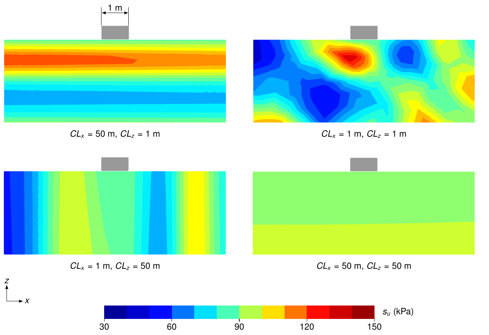
Figure 1.4: Random fields of undrained shear strength.
To generate a random field of a given material parameter, four input parameters are required:
- The mean value of the parameter.
- The coefficient of variation of the parameter, COV (%).
- The horizontal correlation length of the parameter, CL_x (m).
- The vertical correlation length, CL_z (m).
Regarding the exact value of the parameters, the three latter are the most uncertain ones. Traditionally, little effort has been made to quantify these parameters although several site investigation methods, notably cone penetration testing, does allow for at least rough estimates. What is certain, however, is that the vertical correlation length generally is significantly less than the horizontal correlation length. In their paper examining a wide variety of data, Phoon and Kulhawy (1999) found vertical and horizontal correlation lengths (or 'scales of fluctuation') for s_u of 0.8 to 6.1 m and 46 to 60 m respectively. An indication of what such correlation lengths imply for the distribution of undrained shear strength can be gauged from the top left image in Figure 1.4 where the vertical and horizontal correlation length are 1 m and 50 m respectively. Regarding the coefficient of variation for s_u, the available data display a significant scatter between approximately 10% and 60% and with a decreasing trend for increasing mean value of s_u (see Figure 1.5).
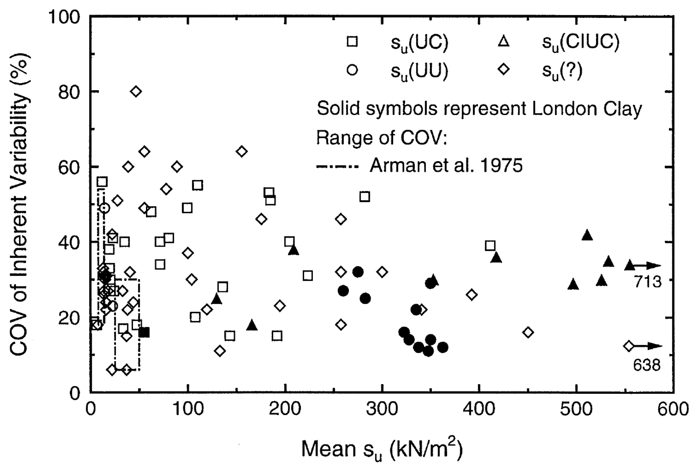
Figure 1.5: Coefficient of variation for s_u versus mean s_u (from Phoon and Kulhawy 1999).
On the basis of the guidelines provided by Phoon and Kulhawy (1999), the following parameters for s_u are used in the following:
- Mean value = 80 kPa
- Coefficient of variation, COV = 30%
- Horizontal correlation length, CL_x = 50 m
- Vertical correlation length, CL_z = 1 m
1.2.1 Optum GX random fields plug-in — Varion
Varion is a Python-based plug-in for Optum GX designed to provide a graphical user interface for simulating soil variability using random fields theory. Varion comes packaged with the standard distribution of GX and can be located in the plug-in toolbar.
The statistical background of the plug-in is largely based on the Geostatistical framework Python package GSTools (Müller et al. 2022). GSTools has been chosen due to its core idea of user flexibility, while providing default models that are well-founded and simple to get started on. The toolbox applies a given covariance model to instantiate a random field. The default correlation function used for the covariance model in Varion is the Gaussian, as it has low variability for neighbouring data and a gentle transition towards maximum variability at greater distances. Further correlation functions are available and GSTools allows user-defined models (refer to the GSTools documentation for specifics and a useful collection of examples).
Varion applies the structured random field routine to avoid excessive computation and keep the random field generation equidistant along each axis in the domain.
1.3 Deterministic analysis
A deterministic analysis with a constant s_u = 80 kPa throughout the domain is first carried out. This results in a factor of safety of 1.70 with the failure mechanism shown in Figure 1.6.
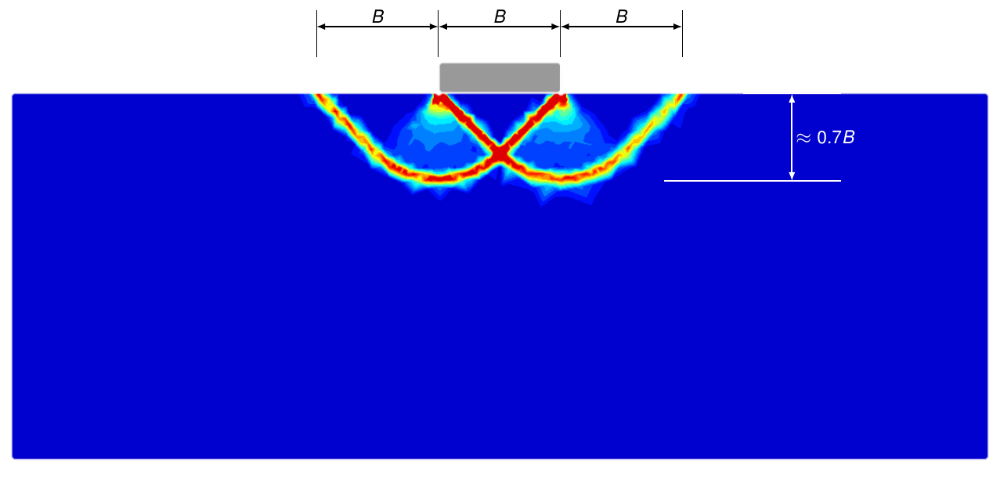
Figure 1.6: Failure mechanism for constant s_u.
The vertical extent of the failure mechanism is approximately 0.7B. This quantity is of interest when gauging the influence of the vertical correlation length. For B \ll CL_z, the resulting probability distribution of FS would be expected to be of the same kind as the lognormal distribution accounting for the inherent variability of s_u. In other words, the variation of s_u implied by the random field does not come into effect as the failure is much shallower than the scale of this variation. Conversely, for B \gg CL_z the failure mechanism covers all possible values of s_u generated by the random field and we should expect a probability distribution of FS corresponding to some characteristic average value and with little variation from run to run, i.e. with a small coefficient of variation.
1.4 Stochastic analysis
In the following, a stochastic analysis is conducted using the parameters mentioned above (mean s_u = 80 kPa, COV = 30%, CL_x = 50 m, CL_z = 1 m). Details regarding the appropriate analysis type, the necessary number of elements and the necessary number of Monte Carlo runs are discussed in further detail in
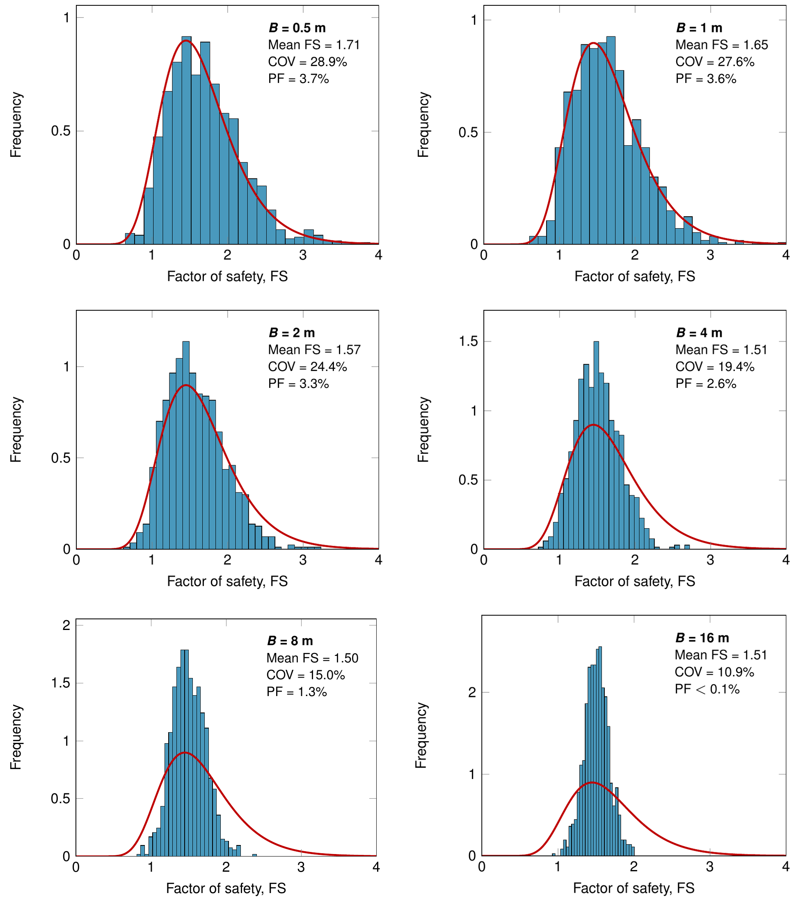
Figure 1.7: Probability distributions of factor of safety. The red curves correspond to an infinite correlation length (or an infinitesimal footing width). Shown in each figure are the mean factor of safety, its COV, and the probability of failure (PF) based on 1,000 runs.
The Seed (equal to 1 by default) is the seed used in the generation of the random fields. This quantity is incremented by 1 for each Monte Carlo run. As such, if the n'th run is to be studied in more detail, the number of runs can be set to 1 and the Seed to n. This will be utilized in the following.
The results of the analysis in terms of probability distribution functions for a variety of footing widths are shown in Figure 1.7. The following trends are noted:
- For small footing widths, the probability distribution of the factor of safety approaches the lognormal distribution corresponding to an infinite correlation length.
- As the footing width increases, the COV of the factor of safety decreases.
- The mean factor of safety increases with increasing footing width while the probability of failure decreases.
While the first two trends are expected, the last one is somewhat problem dependent. Indeed, it is not guaranteed, in general, that the mean factor of safety would decrease with increasing footing width (or for an increasing ratio between the characteristic system length and the correlation length).
1.5 Collapse mechanisms
The variability of the s_u distribution modelled by random fields gives rise to a variety of collapse mechanisms. A quick overview of the variability of these can be gauged by plotting the probability distribution function of the mobilized mass. An example, for B = 2 m is shown in Figure 1.8.
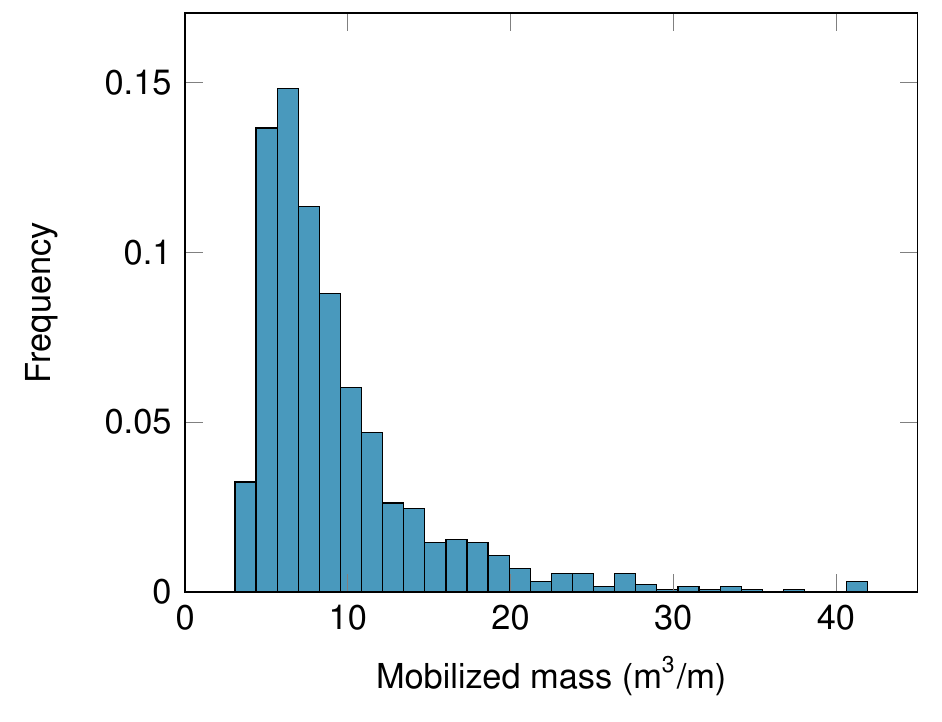
Figure 1.8: Probability distribution of mobilized mass (excluding footing) for B = 2 m.
To rerun particular Monte Carlo instances, the Seed should be set to the run number and the number of Monte Carlo runs should be set to 1 (see the following section). Three examples are shown in Figure 1.9. These represent cases where:
- (a) the mobilized mass is small as a result of a shallow weak layer overlying a strong layer.
- (b) the mobilized mass is moderate as a result of a layer of moderate strength and depth overlying a strong layer.
- (c) the mobilized mass is large as a result of a strong layer overlying a weak layer.
From Figure 1.8 we see that failure mechanisms similar to that of case (b) is more common than either the shallow or deep mechanism of cases (a) and (c) respectively. Furthermore, all the three mechanisms shown involve some amount of rotation resulting from the non-uniformity of the strength. This characteristic is more the rule than the exception.
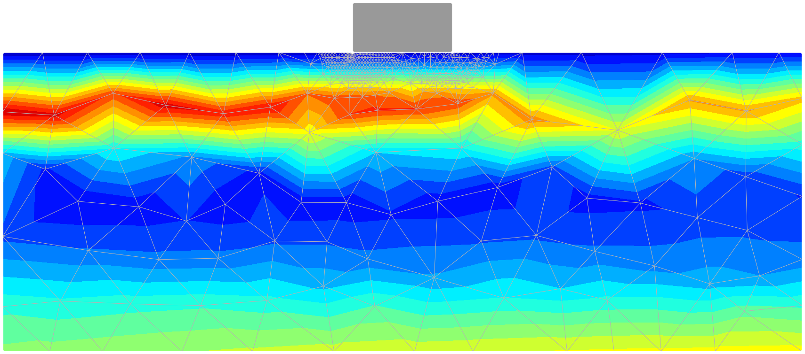 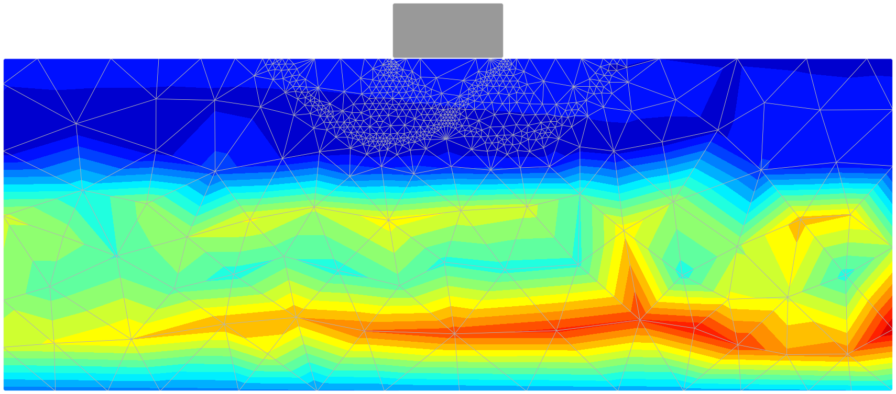 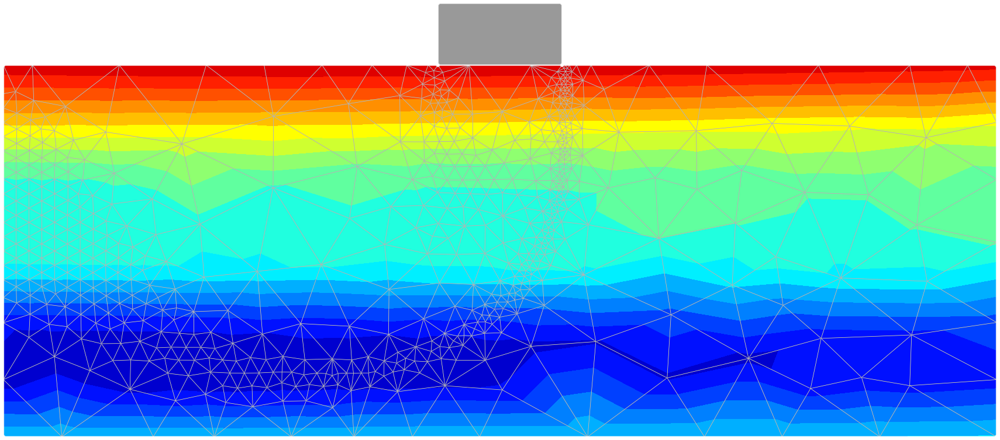
Figure 1.9: Selected collapse mechanisms with distribution of s_u for B = 2 m (mobilized mass excluding footing). From top to bottom: (a) run no 351, mobilized mass = 3.1 m³/m; (b) run no 167, mobilized mass = 9.4 m³/m; (c) run no 42, mobilized mass = 42.0 m³/m. Coloring represents the undrained shear strength varying between s_{u,\text{min}} (blue) and s_{u,\text{max}} (red).
1.6 Analysis type and number of runs
1.6.1 Analysis type
For the present problem, the factor of safety is proportional to the undrained shear strength s_u as is the bearing capacity. As such, the factor of safety can either be determined directly from a Strength Reduction analysis or, alternatively, from a Limit Analysis with Multiplier = Load. Generally speaking, Limit Analysis is somewhat faster than Strength Reduction and is therefore preferred for the present stochastic analysis.
1.6.2 Number of runs
As with the number of elements, the number of Monte Carlo runs necessary to extract key statistics (mean value, COV, etc) with reasonable confidence is to a certain extent problem dependent.
For the case of B = 2 m, the mean value and COV of the factor of safety versus run number are shown in Figure 1.10. In both cases, we see that what appears to be an acceptable degree of accuracy can be obtained with as little as 100–200 runs (as opposed to the 1,000 runs used for all problems in the present example). The probability of failure, on the other hand, requires somewhat more runs to be determined with the same degree of accuracy.
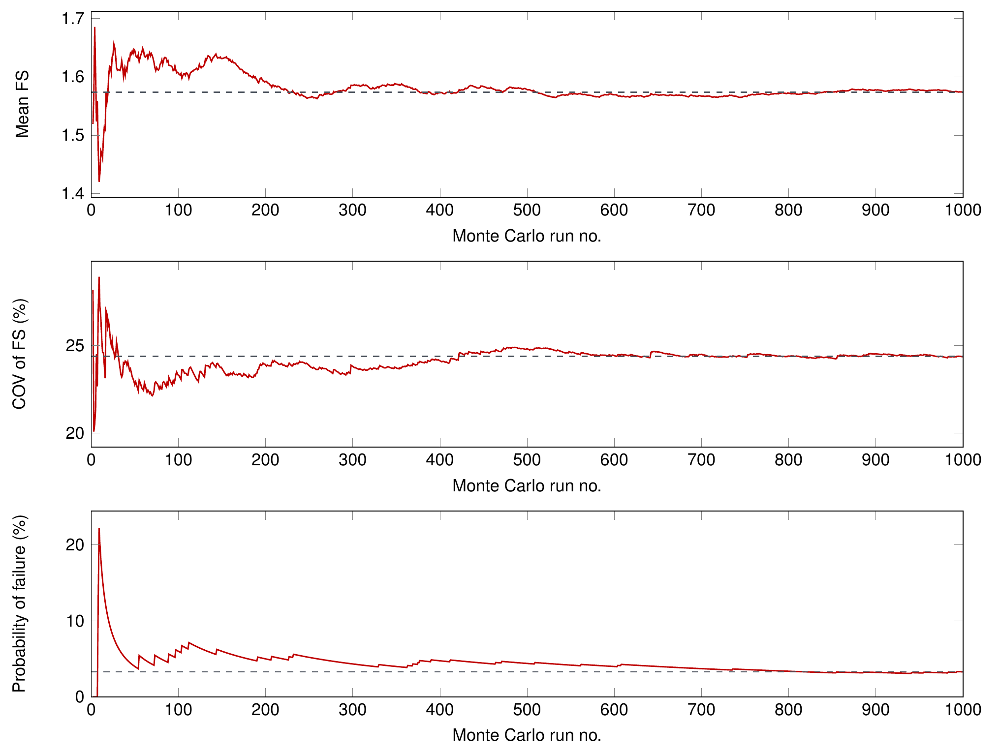
Figure 1.10: Key statistics versus Monte Carlo run number (B = 2 m).